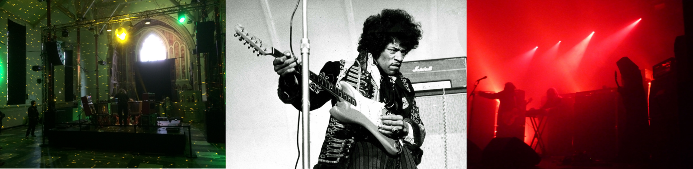
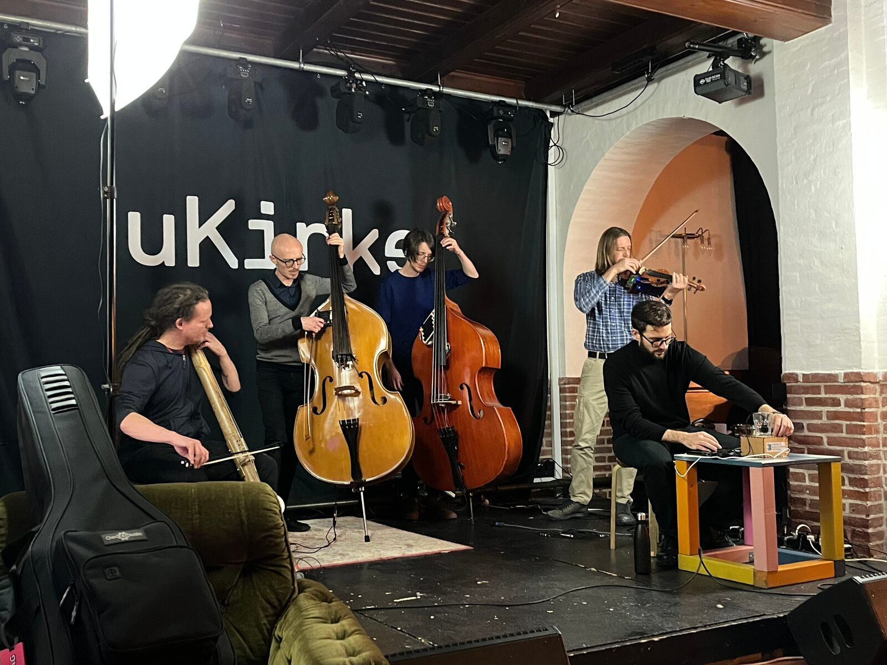
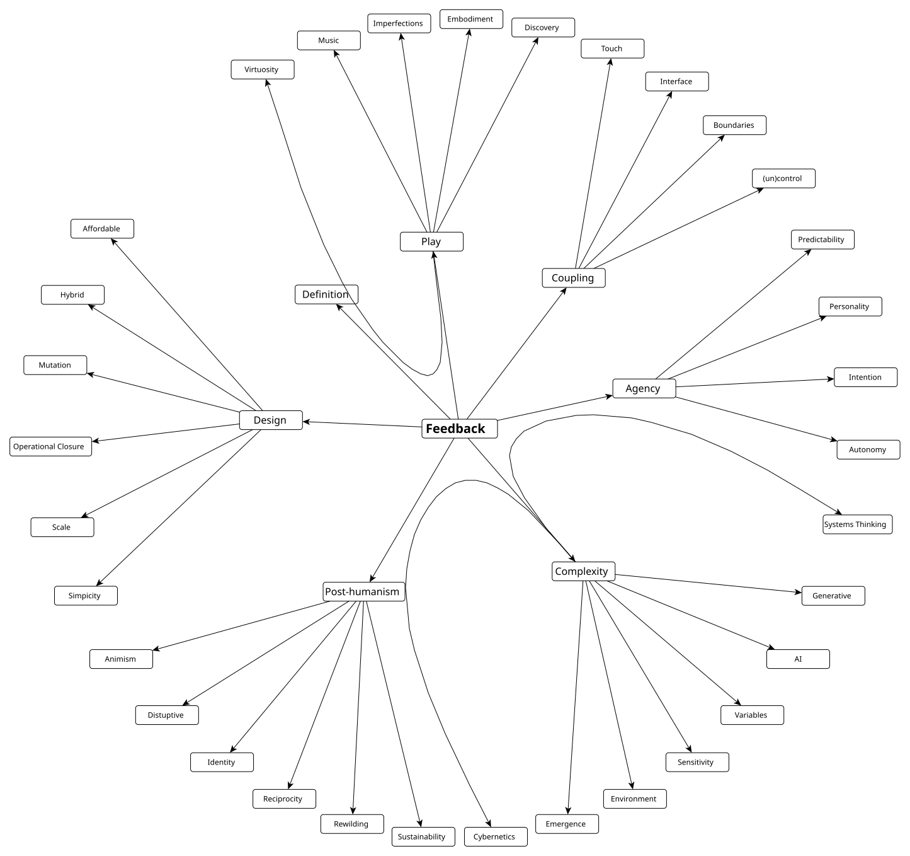

Reflexions upon Feedback
Abstract
Feedback is a technique that has been used in musical performance since the advent of electricity. From the early cybernetic explorations of Bebe and Louis Barron, through the screaming sound of Hendrix’s guitar, to the systems design of David Tudor or Nic Collins, we find the origins of feedback in music being technologically and aesthetically diverse. Through interviews with participants in a recent Feedback Musicianship Network symposium, this paper seeks to investigate the contemporary use of this technique and explore how key protagonists discuss the nature of their practice. We see common concepts emerging in these conversations: agency, complexity, coupling, play, design and post-humanism. The paper presents a terminological and ideological framework as manifested at this point in time, and makes a theoretical contribution to the understanding of the rationale and potential of this technological and compositional approach.
Author Keywords
NIME, feedback instruments, feedback musicianship, cybernetics, instrument design, agency, autonomy, intent.
CCS Concepts
•Applied computing → Sound and music computing; Performing arts;
Introduction
The use of feedback in music has a history reaching back to the advent of electronic instruments. Often seen as a “failure” or “error” in sound, perhaps caused by a sloppy technician, or equipment placed in a new environment, there are others who embrace this quality of electric instruments as a compositional and performative technique. Feedback has been used in musical performance for a long time, but by the middle of the 20th century, ideas in cybernetics and information science began to infiltrate the cultural sphere, and the cybernetic explorations of Bebe and Louis Barron through the screaming sound of Hendrix’s guitar, to the systems design of David Tudor are good examples of artistic work that reflects this ideological zeitgeist.
Today we are witnessing a renewed focus on feedback as a compositional and performative technique, implemented in musical performances, installations and instruments. Instances of feedback musicianship in recent popular culture include the music of Sunn O))), installations like Lou Reed’s Drones, instruments like the halldorophone (known through the film scoring work of composer Hildur Guðnadóttir, and whose designer is one of this paper’s authors) and the no-input mixing of Toshimaru Nakamura.


Lou Reed Drones. An installation at the 2016 Brighton Festival (CC BY) Thor Magnusson. Hendrix on stage at Gröna Lund in Stockholm, Sweden in June 1967 (public domain). Sunn O))) on stage at the Ritz in Manchester 11 June 2012 (CC BY)
This paper does not seek to delve into the history or technical analysis of feedback systems, there are already papers that do that [1][2]. Rather, it aims to explore the subtle set of ideas that underpin the work in feedback and see if these have evolved from earlier manifestations in the 20th century with new feedback systems and instruments. The paper is a result of a series of interviews with participants in the Feedback Musicianship Network, mainly during the December 2021 symposium held at Aalborg University in Copenhagen.
Background
If asked, most people would be able to describe audio feedback. The most basic feedback involves the output of an energised system folding back into itself, for example if a microphone is held close to a speaker. For some, feedback is experienced as a failure in the system, but for others it is a material to work with. Rather than being a style or a genre, feedback is a technique, a particular focus on features of a system that are often auxiliary to the system’s designed function. Feedback is a particular mentality, a way of listening and performing, an orchestration of energies. The definitions of feedback thus inevitably vary. We might focus on the instrument itself and its closest connections, such as an electric guitar and an amplifier, but we can equally include the performer, the environment, the audience, as all of these influence the nature of the feedback. Feedback might be the result of pure electronics but also computational algorithms, and the “stuff” that is “fed back” can be sound, control data, algorithms, physical elements, and so on.
The cybernetic epistemology that emerged in the middle of the 20th century was influential: the notion that complex systems, with their self-organisation and dynamical control within them, could be useful in the analysis and production of all kinds of situations from biology, economy, traffic, sociology and, of course, in the arts. Hayles describes how the waves of cybernetics in the 20th century are incorporated in literature and the arts [3]. Looking through history, Nicolas Schöffer created an installation in 1955, called CYSP 1, where he implemented a self-regulating mechanism. A landmark exhibition in 1968, called Cybernetic Serendipity, included an artistic work by cybernetician Gordon Pask. Experimental composers such as John Cage, Robert Ashley, Eliane Radigue, Steve Reich, Gordon Mumma and Alvin Lucier all worked with feedback in their music in the late 1960s, influencing artists like Nicolas Collins in the 1970s. Feedback also found its way into the work of video artists Steina and Woody Vasulka, as well as Nam June Paik.
Feedback, like any music technique, is always in context: cultural, technological, aesthetic, etc. With computers becoming available to artists in the late 20th century, and with real time processing of audio possible in the 1990s, artists began working with feedback in software as well. This paved the way for feedback in all kinds of music, like noise, electronica, experimental, etc. We could even talk about schools of feedbackers, for example the Italian school, including people like Agostino Di Scipio, Andrea Valle and Dario Sanfilippo, or, in the UK, the work of John Bowers, Simon Waters, and Jonathan Impett, which are good examples of turn-of-the-century experimentation with ecological thinking and recursion.
In recent years, self-resonating vibrotactile instruments have become an energetic field with a particular peak of interest in feedbacking string instruments, such as: the halldorophone of Halldor Ulfarsson [4], the feedback cellos of Alice Eldridge and Chris Kiefer [5], or the double basses of Adam Pulz Melbye [6], Thanos Polymeneas-Liontiris [7] and Johannes Burström. The attraction with this method, bringing a fresh approach to the more distant and non-tactile approach of the installation systems is the focus of performance and the relationship between the musician and the instrument. It is by means of the “unruly” nature of these instruments where notions of resistance, conversation, collaboration, agency, autonomy, etc. become new performative parameters in the playing of the instrument. The field is in need of new language and models of feedback musicianship and a recent Echo Journal special issue brought forth articles including on the materiality of feedback [8], topologies [9], ontologies [10], and models [11] of feedback.


The participants in the Feedback Musicianship Network, some of whom we interviewed for this paper, apply the technique of feedback to their instruments and systems in two domains: The mechanical, by building self-resonating vibrotactile instrument systems and the digital, by employing a recursive flow of digital information derived from and affecting the state of the system they employ for music making.
Methodology
This research derives from extensive work with feedback instruments, the running of the Feedback Musicianship Network, and the main prompt was the Copenhagen Network Meeting on November 30th, 2021. We used the opportunity to interview eight of the participants, seeking to draw a conceptual landscape of the interests, techniques and terminology currently used. Most of the interviews were conducted during the meeting, but some had to be taken via video link afterwards because of scarcity of time. Two interviewees were female, six were male.
The interviews were open ended and they lasted typically around 45 minutes. The interviewer used the same prompts for all participants, but there were no questions that would lead to the use of a specific terminology (such as agency, complexity, systems, cybernetics, etc.). Only if the interviewee would use such terms would the interviewer possibly ask further about those. The intention with this was to seek to get a representative picture of the ideas and terminology used by the practitioners themselves and refrain from imposing a theoretical framework onto people’s practice.
The interviews were transcribed and analysed thematically, using the Taguette software [12]. We applied Grounded Theory [13] to code the themes, observant to emerging patterns in the data. The interviews were coded independently by three researchers, and then tags were rationalised and formed into categories through group discussion. The interviews are anonymous and in the next section we reflect upon the themes that emerged. In the Discussion section we reflect upon what feedback musicianship is at this point in time.
Interview Themes
The interviews revealed a diverse and intense community of practitioners who are all dedicated to the use of feedback in their work. The reasons differ and the conceptual frameworks and terminology are quite varied. However, when the interviews are transcribed and tagged, concepts, codes and categories started to emerge and we present them here below.


A mindmap representation of the key terms as analysed from the interviews.
Feedback
Defining the nature of feedback is simple on the surface, but when digging into the responses people gave when describing their own feedback systems, a rich picture of diverse design and behaviour emerged. A responder explained feedback as the “instrument listening to itself.” The idea of simple systems came up often, where taking the output of an amp and feeding it back on itself was seen as the primary example of feedback. Feedback is concurrently a technical concept and a technique that is weighted with the ability to convey messages that are outside the performer’s intentions. Feedback provides the notion of distributed or shared agency and there is a sense that the practice is “fundamentally different from a lot of previous music.”
Agency
The notion of agency was recurrent throughout the interviews. The idea that the “instrument is sort of playing itself in a way,” connoted autonomous behaviour. However, the notion that the instrument embodies intention, or independent agency, outside of the human creator and performer, was typically seen as an exaggeration, where people stated that the perception of these apply rather to the relationships of systems. The agency is distributed, but the boundary lines of what constitutes a feedback system varied between people, whether it was limited to the feedback instrument itself, involving the stage, the sound system, the presence of the audience and, of course, the human performer.
One interviewee discussed the notion of agency from the perspective of biology, introducing the concept of operational closure, but questioning how we might see such a closure in musical instruments. From the biological definition, a sourdough would have more agency than a feedback instrument, but this is experienced very differently at the human performer level. Agency is therefore relational, contextual and very much dependent upon perception. The interesting question here is: through what mechanisms do we attribute agency in mechanical objects? This relates to questions of anthropomorphism in the perception of technology; for some interviewees this related to how these systems allow “us to engage in a narrative that we are actually performing with someone” or play against something. Here, terms like “taming,” “predictability,” “control,” “uncertainty,” “personality,” and “authorship” frequently came up. Many people expressed the joy of playing at the cusp of the unpredictable, with an instrument that might do things outside their control.
Complexity
Considering the cybernetic basis of feedback systems, complexity-thinking was important to most of the interviewees. Beyond the workings of the instruments, complexity in feedback systems further arises from the fact that they are typically not simply residing installed in a studio, but taken onto a stage, possibly in performance with other instruments, and the acoustics, sound system, and other instrumental agents are bound to change the nature of the system itself. This requires a particular sensitivity and attention to changed parameters and re-skilling in the middle of performance. Feedback instruments thus call for strong improvisation skills, and the idea that one can compose for them with deterministic musical notation is bound to fail.
The complexity of feedback instruments does not derive only from the physics of the instruments themselves with the circularity of sound and electricity through the system. It often involves computational algorithms, written in code and the feedback can be cross-modal, i.e. where audio is turned into motor behaviour or sensor data into parameters affecting the audio. This is part of the interaction and interface design, and the addition of machine learning and other AI can greatly add to the parsing of control and audio data. “Everything is information,” said one participant, including the audio, and there is no need to separate these modalities in the instruments, noting that audio mediated through electric current is already a modal change.
Coupling
Coupling was a term that was often mentioned. This references the interface between two systems, typically the human and the instrument, and how the touch, the coupling, shapes both. For one interviewee, “the sound is a material that you can shape with your hands. I’m a very tactile person because I like to touch things and I understand things by touching them.” This describes a sound system where the hands of the performer are “touching” the sound above speakers and shaping the feedback in quite sophisticated ways. This participant described the sound as “material” and it indeed looked like they were shaping clay or such material during performance. The interviewee speculated also about the “materiality” of feedback-generated sound, as of course, there are molecules bouncing around in a gas form. Another responder discussed how, despite the complexity of the instruments, they operate within our intuitive understanding of sound and the physical world. Many of the participants discussed the desire for “uncontrol” or being in a dialogue with the system through this coupling. One said that they are “trying to lose control” and another said that if they wanted “artistic control [they could] just write a score and give it to an ensemble.”
Another topic that came up regarding the coupling of two systems is that both are constantly changing: it is not just the feedback system that is being shaped and transformed through play, but the system is also continually changing the performer, whose ideas and behaviour will adapt to the performance of the system: “its response will be different because you react different and you’re part of the system, the algorithm is not changing really, no, but the system becomes different because you’re one part and that part is changed.”
Design
All interviewees saw emergence as a key factor in the design of feedback systems, a mentality that seeks to yield control to the instrument and engage in a conversation with it. Autonomy of some sort is inscribed in the feedback instrument, but this is perhaps an autonomy extended in time and space, as one interviewee commented “I think it’s a little bit problematic to say that this object made a difference as there’s usually somebody behind that object if you trace it back.” From this perspective the authorship is simply “I made the instrument and I played it, so it’s easy to assign authorship to me.”
Play
Interviewees often described playing their instruments as a process of discovery, although they conceptualised this discovery process in varied ways. One responder viewed feedback musicianship as a rejection of conventional notions of virtuosity; “I don’t want to control it, I want to have a relationship.” Interviewees enjoyed the emergent dialogues with their instruments (“these fixed musical... pieces, it’s like I’m more interested in negotiation”) and the discovery of resistances.
The musicians had a broad spectrum of preference for the degree to which they desired their instruments to be controllable, from approaching deterministic (“I can do something very deterministic even though there’s always this dialogue with the instrument”) to reactive styles of play (“the systems or instruments I design are usually quiet if I don’t do anything, they’re reactive”) to the relinquishing of control (“these instruments, having their own agency or doing their own thing... that’s precisely what it is like, I’m not really, I’m not fully controlling it”).
Post-humanism
Many interviewees expressed sentiments that they were not so interested or occupied with their own personal voice or expression in their performances. This relates to the previously discussed comments on agency, uncontrol, autonomy, and design. One said, “personally I’m interested in the instrument being in the way of my intent or whatever we want to call it. And maybe I’m also, well as I grow older, maybe I’m also becoming less interested in this romantic notion of virtuosity.” Another interviewee mentioned animism “as a way of having a relatedness, kinship or relation to nature, to everyone, to animals” and yet another expressed that feedback systems can be tangible epistemic tools for gaining a tacit understanding of complexity.
Many of the interviewees have experimented with designing cybernetic systems, genetic algorithms and artificial life. All of these can be seen as control systems that operate outside the modernist idea of the author, or the artistic self-expression. For one interviewee this “emerged out of cybernetics, this systems thinking, and this focus on emergence which is crucial in artificial life.” If we are increasingly becoming post-human in terms of our biological functionality, we are also de-centring the human in terms of the global ecology systems, starting to realise finally the faulty ways of our thinking which has generated the current environmental disaster, and as one interviewee expressed it, going back to a “pre-Christian mentality.”
Discussion
These interviews demonstrate that contemporary understanding and practices of feedback is different from the practice in the 1960s and 70s. It appears this has to do with the underlying theoretical framework of these two distinct periods. From the middle of the 20th century, the influence of cybernetics and control theory became a strong cultural force, influencing fields such as economy, ecology, politics, business and the arts. However, the current situation of feedback research and practice is situated in times of global environmental disaster, of technologically driven post-humanism, virus pandemics, data economics with AI driven control systems and robotics where the human is somewhat sidelined. We suggest that the new complexity science is the current theoretical framework of feedback musicianship.
The renewed interest in building feedback systems as artistic practice has many explanations. It is clear that there are other more basic reasons for this new focus, such as affordable technologies for DIY instrument building. After decades of digital systems, people are increasingly wanting to explore sound and complexity in tactile form. The interviews indicated that feedback musicianship is not about exercising control but rather about giving it away: about playing “with an instrument” and not “playing on an instrument.” Today’s culture is deeply technological and the response of some people is to shy away from the digital and go to purely acoustic practices, whilst others seek to find more depth in technology.
It is noticeable that none of the interviewees used the term “composition” when describing their design practice. The feedback musicians in the 1970s would often apply phrases such as “composing instruments.” This represents a certain change from the author-like modernist composer to the more collaborative, distributed and diffracted self, often described in post-modern theory, a self which, if anything, has become completely dislocated in time and space with the use of social media. With the abandonment of the “composition” term also follows a distinct boredom with traditional musical values, such as virtuosity, mastery, control, interpretation - and the artist.
Conclusions
In this paper we have provided a summary of the language used by contemporary feedback musicians and applied a grounded theory approach, identifying themes that draw out the characteristics of the practice. We contextualise the current practice as feedback musicianship that has lasted for seven decades, and one that has changed in accordance with scientific and theoretical ideas of the times. All music does this, of course, but with this particular practice, applying this unique technique to generate sound, has a certain focus on systems, agency and complexity that is interesting to trace over time and in this paper we have sought to present contemporary ideas as described by the practitioners themselves.
Acknowledgements
The Feedback Musicianship Network is funded by the UK Arts and Humanities Research Council (Grant no: AH/T013664/1). The Intelligent Instruments project (INTENT) is funded by the European Research Council (ERC) under the European Union’s Horizon 2020 research and innovation programme (Grant agreement No. 101001848).
Ethics Statement
This project is funded by the ERC and before embarking upon our study we sought ethical clearance from the Icelandic Science Ethics Committee. The committee considered our research questions, methods, recruitment strategies and treatment of personal data. The interviews were conducted amongst participants in the Copenhagen December 2021 Feedback Musicianship Network Symposium. We recruited interviewees from this group. Interviewees were given information and consent sheets to sign and it was made clear to them that they could withdraw from the project at any point in time. All personal information is kept safely and anonymously.
Citations
- ↩Sanfilippo, D., & Valle, A. (2013). Feedback Systems: An Analytical Framework. Computer Music Journal, 37(2), 12–27. https://doi.org/10.1162/comj_a_00176
Eldridge, A., Kiefer, C., Overholt, D., & Ulfarsson, H. (2021). Self-resonating Vibrotactile Feedback Instruments ||: Making, Playing, Conceptualising :||. In NIME 2021. https://doi.org/10.21428/92fbeb44.1f29a09e
↩Hayles, N.K. 1999. How We Became Posthuman: Virtual Bodies in
Cybernetics, Literature, and Informatics. University of Chicago Press.
↩Úlfarsson, H. (2018). The halldorophone: The ongoing innovation of a cello-like drone instrument. In NIME 2018 (pp. 269–274). Blacksburg, Virginia, USA: Virginia Tech. https://doi.org/10.5281/zenodo.1302579
↩- ↩Eldridge, A., & Kiefer, C. (2017). Self-resonating feedback cello: interfacing gestural and generative processes in improvised performance. NIME, 25–29.
- ↩Melbye, A. P. (2021). Resistance, Mastery, Agency: Improvising with the feedback-actuated augmented bass. Organised Sound, 26(1), 19–30.
- ↩Liontiris, T. P. (2018). Low Frequency Feedback Drones: A non-invasive augmentation of the double bass. NIME, 340–341.
McLaughlin, Scott. (2022). Feedback and materiality on the spatial and energetic planes. in ECHO, a journal of music, thought and technology 3. doi: 10.47041/BWDY6034
↩Thomasi, Ricardo. (2022). Patterns of emergence and feedback topology in Ecos Study: glimpses of a performance ecosystem model. in ECHO, a journal of music, thought and technology 3. doi: 10.47041/ADJW7276
↩Di Scipio, Agostino. (2022). A Relational Ontology of Feedback. in ECHO, a journal of music, thought and technology 3. doi: 10.47041/TKUL7223
↩Sanfilippo, Dario. (2022). Towards the formalisation of structurally-coupling performance modalities and interfaces in human-machine interaction. in ECHO, a journal of music, thought and technology 3. doi: 10.47041/WRST7328
↩- ↩Rampin, R., & Rampin, V. (2021). Taguette: open-source qualitative data analysis. Journal of Open Source Software, 6(68), 3522. https://doi.org/10.21105/joss.03522
- ↩Charmaz, K. (2014). Constructing grounded theory. sage.